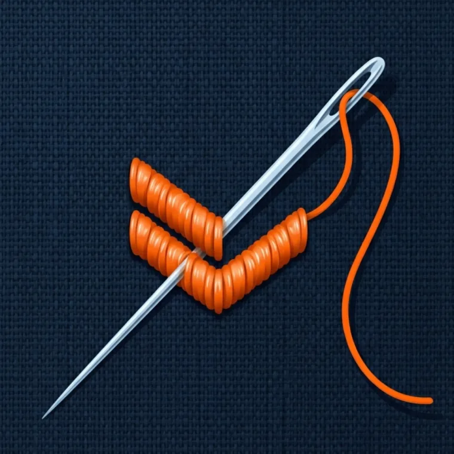

Bestickung
Industriewäsche & Dauerbelastung
Ihr Logo wird direkt ins Gewebe gestickt. Wirkt hochwertig und hält jahrelang – auch bei häufiger Industriewäsche. Ideal für Polos, Hemden, Jacken und Softshell.
- Geeignet für
- Polos, Jacken, Softshell, Caps
- Optik/Haptik
- Hochwertig, erhaben, textil
- Farben
- Mehrfarbig (Garnfarben)
- Waschbarkeit
- bis 60 °C waschbar · industriewäschetauglich
Grenzen bei sehr feinen Details und Farbverläufen – dann empfehlen wir Digitaldruck.